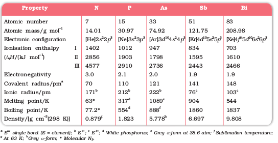
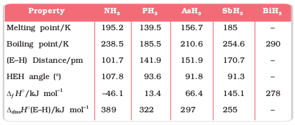

7.1 Group 15 Elements
Group 15 includes nitrogen, phosphorus, arsenic, antimony and bismuth. As we go down the group, there is a shift from non-metallic to metallic through metalloidic character. Nitrogen and phosphorus are non-metals, arsenic and antimony metalloids and bismuth is a typical metal.
7.1.1 Occurrence
Molecular nitrogen comprises 78% by volume of the atmosphere. In the earth’s crust, it occurs as sodium nitrate, NaNO3 (called Chile saltpetre) and potassium nitrate (Indian saltpetre). It is found in the form of proteins in plants and animals. Phosphorus occurs in minerals of the apatite family, Ca9(PO4)6. CaX2 (X = F, Cl or OH) (e.g., fluorapatite Ca9 (PO4)6. CaF2) which are the main components of phosphate rocks. Phosphorus is an essential constituent of animal and plant matter. It is present in bones as well as in living cells. Phosphoproteins are present in milk and eggs. Arsenic, antimony and bismuth are found mainly as sulphide minerals.
The important atomic and physical properties of this group elements along with their electronic configurations are given in Table 7.1.
Table 7.1: Atomic and Physical Properties of Group 15 Elements
Trends of some of the atomic, physical and chemical properties of the group are discussed below.
7.1.2 Electronic Configuration
The valence shell electronic configuration of these elements is ns2np3. The s orbital in these elements is completely filled and p orbitals are half-filled, making their electronic configuration extra stable.
7.1.3 Atomic and Ionic Radii
Covalent and ionic (in a particular state) radii increase in size down the group. There is a considerable increase in covalent radius from N to P. However, from As to Bi only a small increase in covalent radius is observed. This is due to the presence of completely filled d and/or f orbitals in heavier members.
7.1.4 Ionisation Enthalpy
Ionisation enthalpy decreases down the group due to gradual increase in atomic size. Because of the extra stable half-filled p orbitals electronic configuration and smaller size, the ionisation enthalpy of the group 15 elements is much greater than that of group 14 elements in the corresponding periods. The order of successive ionisation enthalpies, as expected is ∆iH1 < ∆iH2 < ∆iH3 (Table 7.1).
7.1.5 Electronegativity
The electronegativity value, in general, decreases down the group with increasing atomic size. However, amongst the heavier elements, the difference is not that much pronounced.
7.1.6 Physical Properties
All the elements of this group are polyatomic. Dinitrogen is a diatomic gas while all others are solids. Metallic character increases down the group. Nitrogen and phosphorus are non-metals, arsenic and antimony metalloids and bismuth is a metal. This is due to decrease in ionisation enthalpy and increase in atomic size. The boiling points, in general, increase from top to bottom in the group but the melting point increases upto arsenic and then decreases upto bismuth. Except nitrogen, all the elements show allotropy.
7.1.7 Chemical Properties
Oxidation states and trends in chemical reactivity
The common oxidation states of these elements are –3, +3 and +5.
The tendency to exhibit –3 oxidation state decreases down the group due to increase in size and metallic character. In fact last member of the group, bismuth hardly forms any compound in –3 oxidation state. The stability of +5 oxidation state decreases down the group. The only well characterised Bi (V) compound is BiF5. The stability of +5 oxidation state decreases and that of +3 state increases (due to inert pair effect) down the group. Nitrogen exhibits + 1, + 2, + 4 oxidation states also when it reacts with oxygen. Phosphorus also shows +1 and +4 oxidation states in some oxoacids.
In the case of nitrogen, all oxidation states from +1 to +4 tend to disproportionate in acid solution. For example,
3HNO2 → HNO3 + H2O + 2NO
Similarly, in case of phosphorus nearly all intermediate oxidation states disproportionate into +5 and –3 both in alkali and acid. However +3 oxidation state in case of arsenic, antimony and bismuth becomes increasingly stable with respect to disproportionation.
Nitrogen is restricted to a maximum covalency of 4 since only four (one s and three p) orbitals are available for bonding. The heavier elements have vacant d orbitals in the outermost shell which can be used for bonding (covalency) and hence, expand their covalence as in PF–6.
Anomalous properties of nitrogen
Nitrogen differs from the rest of the members of this group due to its small size, high electronegativity, high ionisation enthalpy and non-availability of d orbitals. Nitrogen has unique ability to form pπ-pπ multiple bonds with itself and with other elements having small size and high electronegativity (e.g., C, O). Heavier elements of this group do not form pπ-pπ bonds as their atomic orbitals are so large and diffuse that they cannot have effective overlapping. Thus, nitrogen exists as a diatomic molecule with a triple bond (one s and two p) between the two atoms. Consequently, its bond enthalpy (941.4 kJ mol–1) is very high. On the contrary, phosphorus, arsenic and antimony form single bonds as P–P, As–As and Sb–Sb while bismuth forms metallic bonds in elemental state. However, the single N–N bond is weaker than the single P–P bond because of high interelectronic repulsion of the non-bonding electrons, owing to the small bond length. As a result the catenation tendency is weaker in nitrogen. Another factor which affects the chemistry of nitrogen is the absence of d orbitals in its valence shell. Besides restricting its covalency to four, nitrogen cannot form dπ–pπ bond as the heavier elements can e.g., R3P = O or R3P = CH2 (R = alkyl group). Phosphorus and arsenic can form dπ–dπ bond also with transition metals when their compounds like P(C2H5)3 and As(C6H5)3 act as ligands.
(i) Reactivity towards hydrogen: All the elements of Group 15 form hydrides of the type EH3 where E = N, P, As, Sb or Bi. Some of the properties of these hydrides are shown in Table 7.2. The hydrides show regular gradation in their properties. The stability of hydrides decreases from NH3 to BiH3 which can be observed from their bond dissociation enthalpy. Consequently, the reducing character of the hydrides increases. Ammonia is only a mild reducing agent while BiH3 is the strongest reducing agent amongst all the hydrides. Basicity also decreases in the order NH3 > PH3 > AsH3 > SbH3 > BiH3.
Table 7.2: Properties of Hydrides of Group 15 Elements
(ii) Reactivity towards oxygen: All these elements form two types of oxides: E2O3 and E2O5. The oxide in the higher oxidation state of the element is more acidic than that of lower oxidation state. Their acidic character decreases down the group. The oxides of the type E2O3 of nitrogen and phosphorus are purely acidic, that of arsenic and antimony amphoteric and those of bismuth predominantly basic.
(iii) Reactivity towards halogens: These elements react to form two series of halides: EX3 and EX5. Nitrogen does not form pentahalide due to non-availability of the d orbitals in its valence shell. Pentahalides are more covalent than trihalides. All the trihalides of these elements except those of nitrogen are stable. In case of nitrogen, only NF3 is known to be stable. Trihalides except BiF3 are predominantly covalent in nature.
(iv) Reactivity towards metals: All these elements react with metals to form their binary compounds exhibiting –3 oxidation state, such as, Ca3N2 (calcium nitride) Ca3P2 (calcium phosphide), Na3As2 (sodium arsenide), Zn3Sb2 (zinc antimonide) and Mg3Bi2 (magnesium bismuthide).
Example 7.1
Though nitrogen exhibits +5 oxidation state, it does not form pentahalide. Give reason.
Solution
Nitrogen with n = 2, has s and p orbitals only. It does not have d orbitals to expand its covalence beyond four. That is why it does not form pentahalide
Example 7.2
PH3 has lower boiling point than NH3. Why?
Solution
Unlike NH3, PH3 molecules are not associated through hydrogen bonding in liquid state. That is why the boiling point of PH3 is lower than NH3.